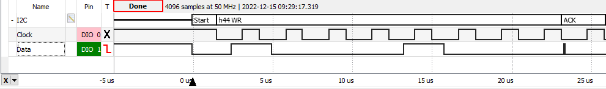
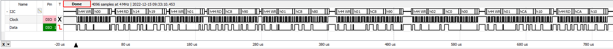

|
Readme
This is a C language project that demonstrates the Inter-Integrated Circuit
interface (I2C). This
project interfaces the OPT3001 optical sensor to the microcontroller.
There is one function, I2C_LightSensor_Input, that performs all
the steps: start, wait, and read result. The problem with
this approach is the I2C_LightSensor_Input takes a long time to execute.
A better approach separates the three steps.
The function I2C_LightSensor_Start starts the conversion, allowing
the system to perform other tasks. At a later time, you can
call I2C_LightSensor_End, which will return true if done.
If I2C_LightSensor_End returns false, your system can perform
other tasks.
The OPT3001 is a digital ambient light sensor (ALS)
that measures the intensity of light as visible by the human
eye. Covering the sensor with your finger or shining a
flashlight on it will change the output of the OPT3001. The
digital output is reported over an I2C-compatible, two-wire serial interface.
More information on the OPT3001 light sensor can be found at
http://www.ti.com/product/opt3001.
The TMP006 was discontinued in 2017. Therefore, it is no longer populated on the board.
Documentation of the TMP006 is unchanged in this user's guide to accommodate users who still
have the device populated on the board.
The following figure shows one I2C communication. The start and address fields are driven by the master (microcontroller)
The ACK field is driven by the slave.

Next figure shows I2C communication zoomed out. Address 0x44 is the light sensor OPT3001.
The write communications are from master to slave, and the read
communications are from slave to master.

Derived from Texas Instrument code
- i2c_controller_rw_multibyte_fifo_poll_LP_MSPM0G3507_nortos_ticlang
- gpio_toggle_output_LP_MSPM0G3507_nortos_ticlang
|